0 Antes de começar
Endereço
É diferente do painel do site (que muda o que aparece em www.patotina.com.br), mas a conta é a mesma.
No celular, vira aplicativo
Depois de entrar, o próprio app desce um convite do topo: no Android, toque em “Instalar o app”; no iPhone, siga o passo a passo pelo Compartilhar. Vira um ícone, como qualquer app. O convite também fica em Mais › Instalar no celular.
A chamada funciona mesmo sem sinal no campo: fica guardada no celular e sobe quando a internet voltar.
Nada se apaga
Aluno, cobrança e chamada nunca são excluídos: trancar, desligar, cancelar e reabrir são os caminhos. Pode mexer sem medo.
Quem vê o quê
| Acesso | Vê |
|---|---|
| Professor | Início, Alunos (só das turmas dele, sem financeiro), Chamada, Agenda. |
| Gestão | Tudo da escolinha: alunos, turmas, chamada, mensalidades, pré-matrículas, agenda, avisos, configurações. |
| Administrador | Tudo, e ainda a aba Contas, onde dá e tira acesso. |
| Família | A área própria em /familia: presença, mensalidades, agenda e avisos dos filhos. |
1 Entrar
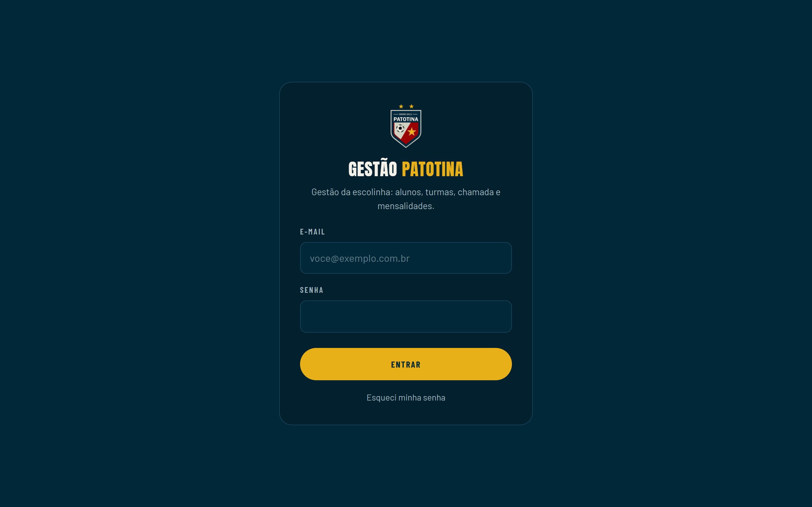
- Digite o e-mail que você recebeu da escolinha.
- A senha. Se for a primeira vez, é a senha inicial que te passaram — troque depois em “Minha conta”.
- Entrar. Você cai no Início e fica conectado neste aparelho até clicar em “Sair”.
- Esqueceu? Esqueci minha senha manda um e-mail com o link para criar outra.
2 Início — os números do dia
É a primeira tela depois de entrar. Cada número é um atalho: toque nele e a lista abre já filtrada.
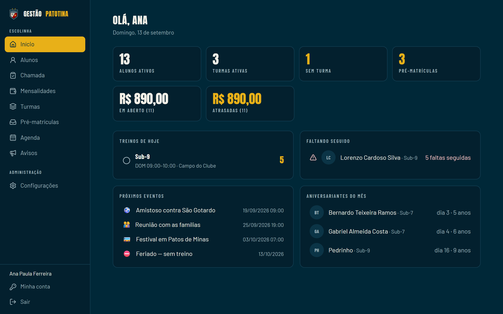
- O menu: no computador fica na lateral; no celular, na barra de baixo (o resto em “Mais”).
- Os números do dia: alunos ativos, turmas, quem está sem turma, pré-matrículas que chegaram pelo site, mensalidades em aberto e atrasadas. Em dourado é o que pede atenção.
- Treinos de hoje, com ✓ quando a chamada já foi feita. Toque na turma para abrir a chamada dela.
- Faltando seguido: quem tem três faltas seguidas ou mais. É a hora de ligar para a família.
- Os próximos eventos da agenda.
- Aniversariantes do mês, com o bolo no dia certo.
- Minha conta troca a sua senha; Sair desconecta deste aparelho.
3 Alunos — a lista
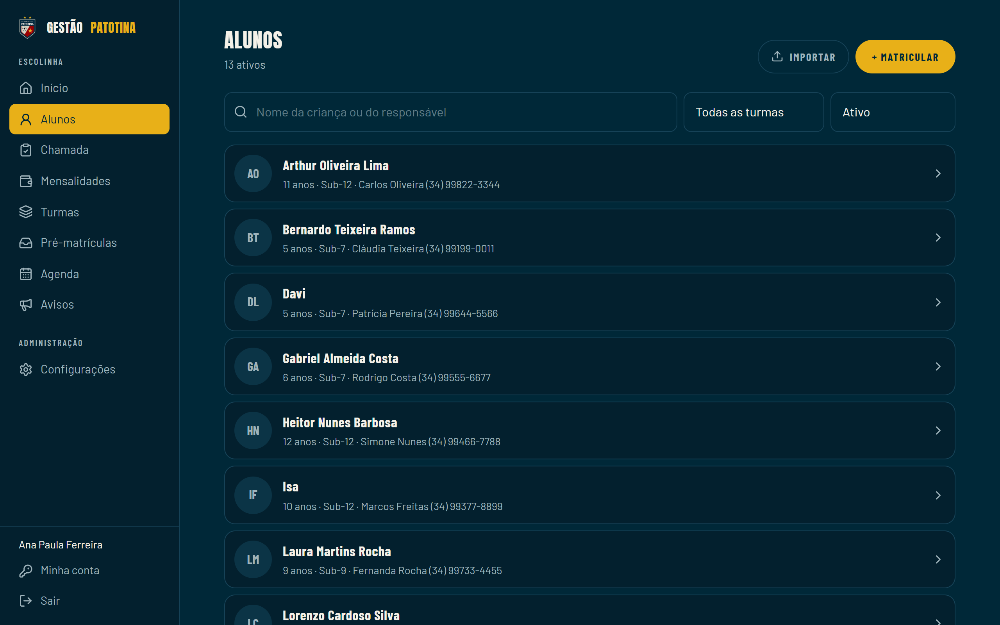
- Busca pelo nome da criança ou do responsável. Vai filtrando enquanto você digita.
- Filtro por turma (ou “Sem turma”, para achar quem ainda não foi encaixado).
- Filtro por situação. A lista abre em “Ativo”; troque para “Trancado” ou “Desligado” para ver quem saiu.
- + Matricular abre o formulário de matrícula (próximo passo).
- Importar: cole a planilha (ou abra o CSV), confira o que é cada coluna e importe de uma vez. O que faltar (nascimento, telefone) vira um aviso na lista e se completa depois na ficha.
- Cada linha mostra idade, turma e o responsável com telefone. Toque para abrir a ficha.
4 Matricular uma criança
Quatro passos: criança → responsáveis → saúde e autorizações → turma e mensalidade. Só o nome e o telefone de um responsável são obrigatórios; o resto pode ser completado depois na ficha.
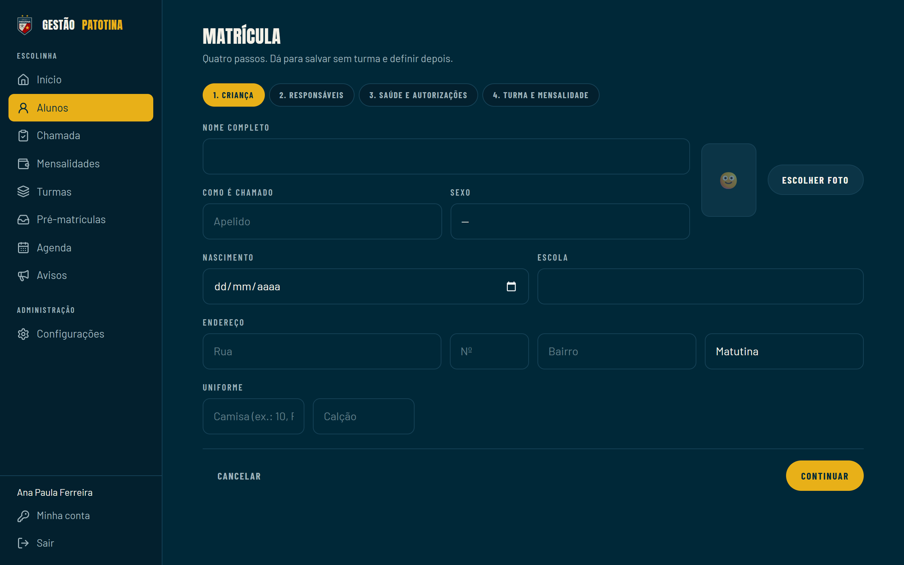
- Os quatro passos. Dá para voltar a qualquer um já preenchido.
- Nome completo — o único campo obrigatório deste passo.
- O nascimento é o que faz o app sugerir a turma certa no último passo.
- Continuar confere o passo e avança. No passo 2, o telefone do responsável é obrigatório: é ele que vira o botão de WhatsApp.
- Cancelar sai sem gravar nada.
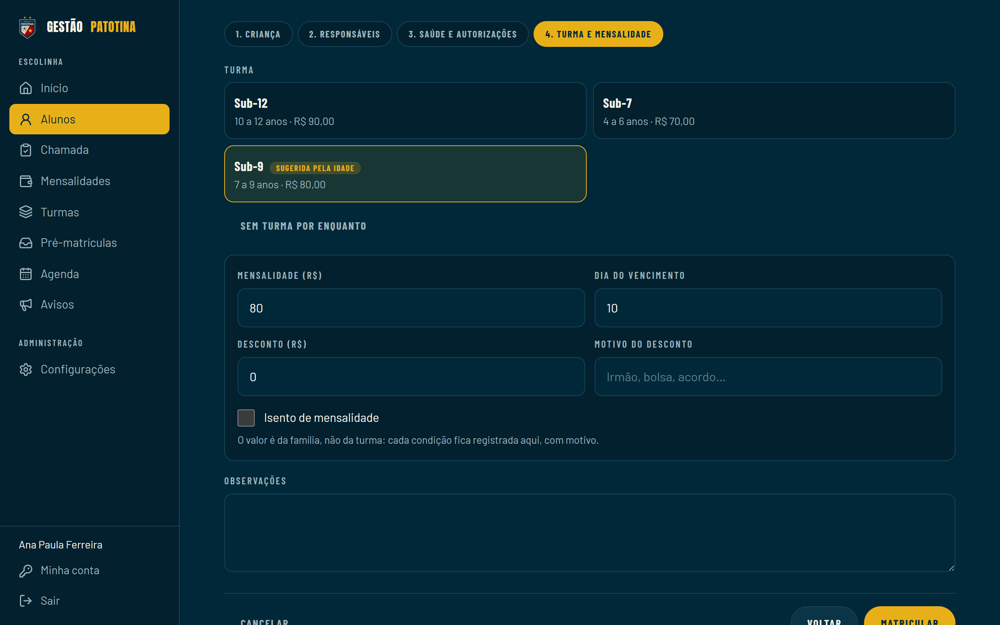
- No passo 4, toque na turma da criança.
- “Sugerida pela idade”: a faixa etária cadastrada em Turmas bateu com o nascimento. Pode escolher outra.
- Ao tocar na turma, a mensalidade vem preenchida com o valor sugerido dela — mas o valor é da família, não da turma: ajuste aqui.
- Desconto, se houver (irmão, bolsa, acordo…).
- Desconto pede um motivo. Sem ele, não salva — é o que deixa registrado por que aquela família paga diferente.
- Matricular grava e abre a ficha da criança.
5 A ficha do aluno
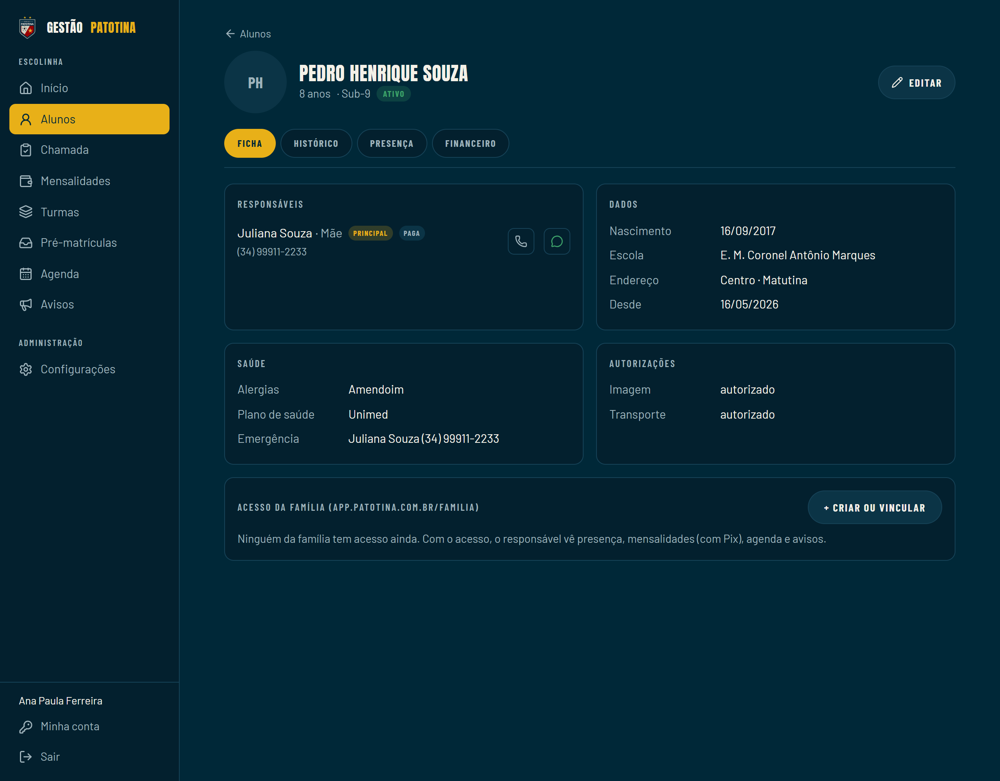
- O selo diz a situação: ativo, trancado, desligado.
- Editar muda os dados cadastrais (escola, endereço, saúde…). A turma não se edita aqui — é pelo Histórico, para ficar registrado.
- As abas: Ficha, Histórico, Presença e Financeiro (só para a gestão).
- O telefone do responsável vira botão de ligar…
- …e de WhatsApp, que abre direto a conversa com a família.
- Acesso da família: crie o acesso com o e-mail do responsável e uma senha inicial. Família com dois filhos usa uma conta só — o segundo aluno é vinculado ao mesmo e-mail. Veja a área da família.
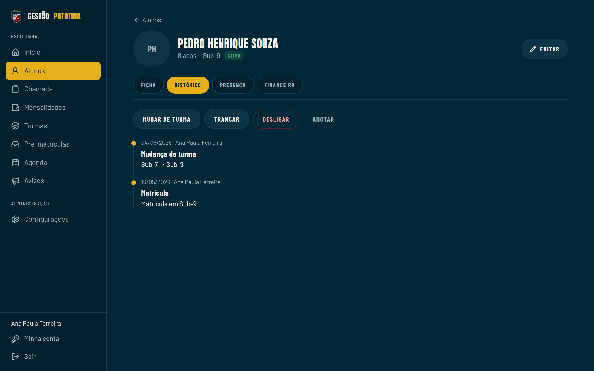
- Mudar de turma: escolha a nova e, se quiser, a data. A turma no cabeçalho muda e fica uma linha no histórico.
- Trancar tira a criança das listas do dia a dia (chamada, cobranças), mas guarda tudo. “Reativar” traz de volta.
- Desligar é a saída definitiva — e mesmo assim nada se apaga. Pede um motivo.
- Anotar registra uma observação com data (conversa com a família, lesão, elogio…).
- A linha do tempo: tudo o que aconteceu, com data e quem fez.
6 Chamada
Feita para o celular, no intervalo do treino. Abre já na turma que treina hoje.
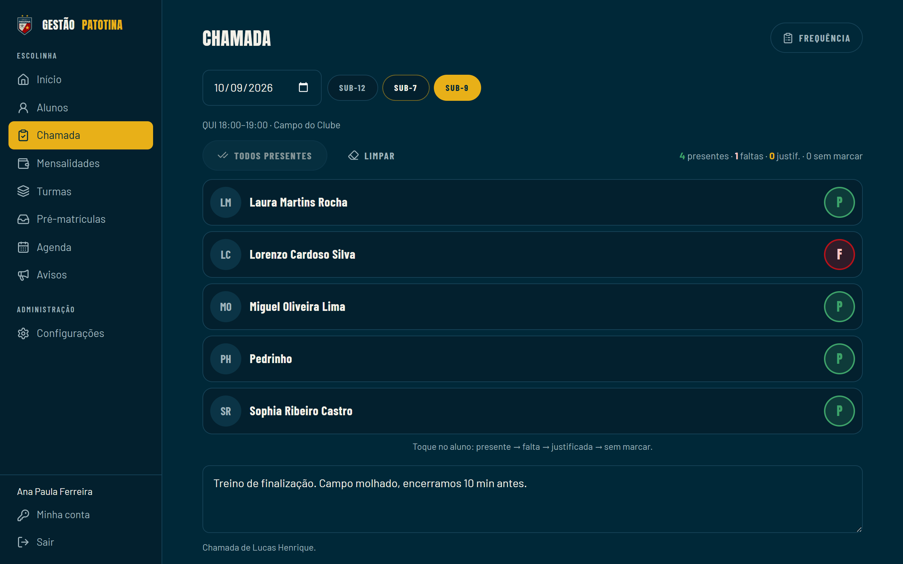
- A data. Troque para registrar um treino passado.
- As turmas: a dourada é a que está aberta; com borda dourada, as que treinam neste dia.
- Todos presentes marca quem ainda não foi marcado. Depois é só corrigir as faltas.
- Limpar zera o treino inteiro (pede confirmação).
- O placar do treino: presentes, faltas, justificadas e quem ainda não foi marcado.
- Toque no aluno para marcar. Cada toque salva na hora.
- A marca gira: P presente → F falta → J justificada → sem marcar. O quarto toque desfaz.
- Observação do treino: chuva, jogo-treino, quem chegou atrasado. Salva ao sair do campo.
- Frequência abre a grade do mês (próximo passo).
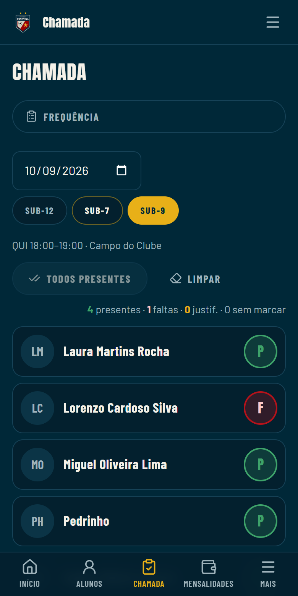
No celular
- O menu (☰) abre as seções que não cabem na barra.
- A linha do aluno é grande de propósito: dá para tocar com o polegar, sem mirar.
- A marca à direita mostra o estado atual.
- A barra de baixo tem só o que se usa todo dia: Início, Alunos, Chamada, Mensalidades.
- O resto (Turmas, Agenda, Avisos…) está em Mais.
Sem sinal no campo? Marque normalmente. A chamada fica guardada no celular e sobe quando a internet voltar — só não feche o app antes disso.
7 Frequência do mês
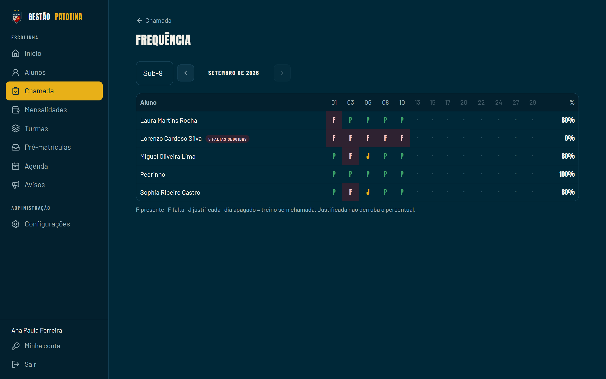
- Navegue pelos meses.
- Troque de turma.
- A grade: um aluno por linha, um treino por coluna. P, F e J nas cores da chamada.
- Treino previsto sem chamada aparece apagado — é um lembrete de que ninguém chamou naquele dia.
- O percentual de presença de cada um no mês. Toque no nome para ver a presença completa na ficha.
8 Mensalidades
A rotina do mês: gerar as cobranças no começo, dar baixa conforme o dinheiro entra, e cobrar quem atrasou. Nada é cobrado automaticamente — o app organiza, você conversa com a família.
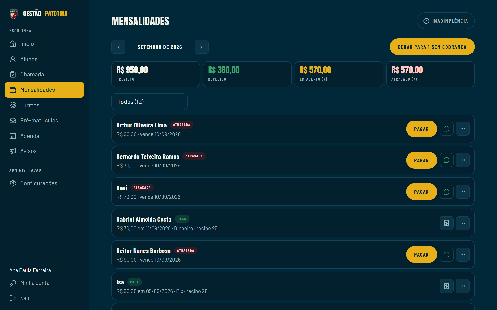
- O mês que você está vendo.
- Gerar cobranças cria uma para cada aluno ativo, com o valor do plano dele. Pode clicar de novo sem medo: quem já tem cobrança no mês não é tocado (o botão só aparece enquanto falta alguém).
- O resumo: previsto, recebido, em aberto e atrasado. Em aberto e atrasado são botões que filtram a lista.
- Filtro por situação.
- Recebeu? Pagar abre a janela de baixa (abaixo).
- O botão verde abre o lembrete no WhatsApp, já escrito com nome, valor, vencimento e Pix.
- Cobrança paga ganha o recibo: número automático, para copiar ou mandar no WhatsApp.
- No “…”: isentar este mês, cancelar a cobrança, ou reabrir (que desfaz um pagamento — o recibo antigo fica anotado).
- Inadimplência lista quem está com mensalidade vencida (abaixo).
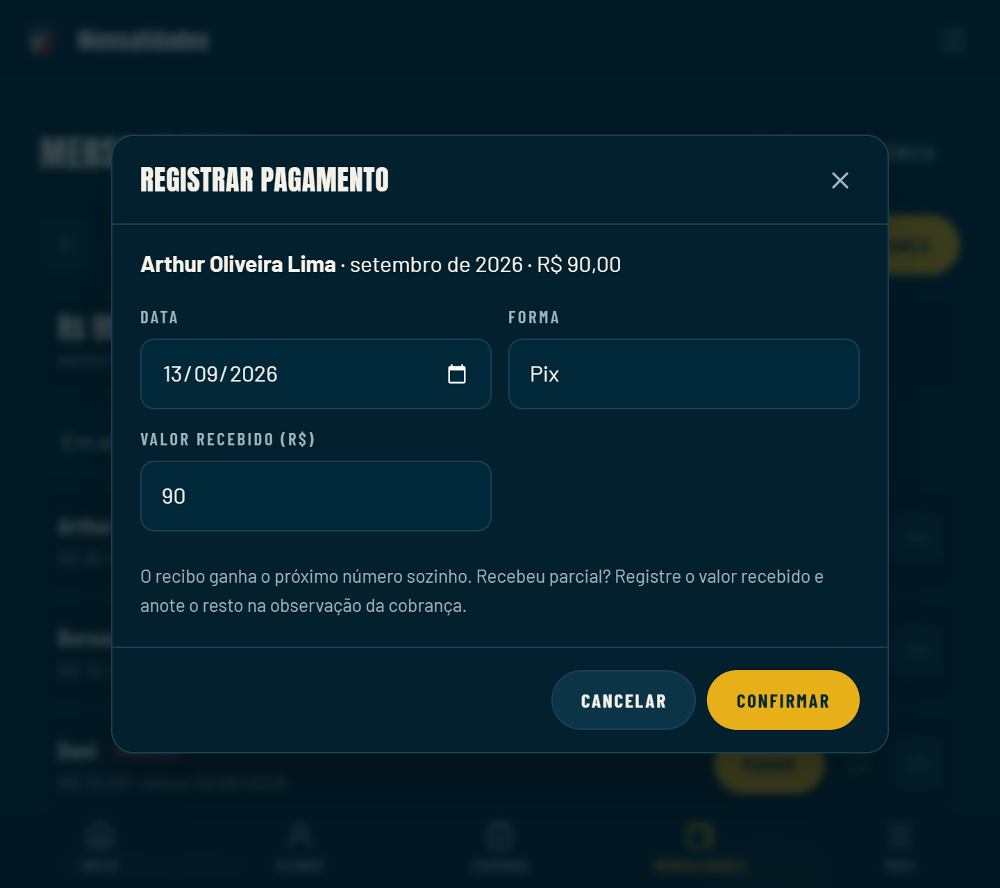
Dar baixa
- A data em que o dinheiro entrou.
- A forma: Pix, dinheiro ou transferência.
- O valor vem preenchido com o devido; ajuste se a família pagou diferente.
- Confirmar. O recibo ganha número sozinho.
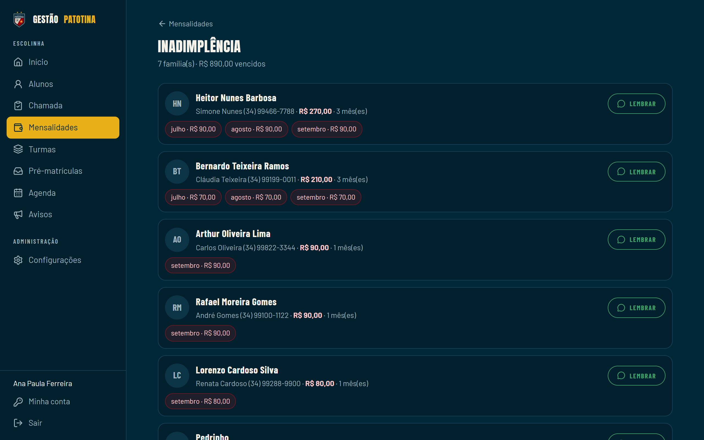
- Cada família com mensalidade vencida: quem paga, o telefone, quanto deve e há quantos meses.
- Lembrar abre o WhatsApp com o lembrete pronto — o texto se ajusta em Configurações.
- Os meses devidos, um a um. Acertou um deles? Toque no mês para registrar o pagamento direto daqui.
9 Pré-matrículas do site
O que a família preenche no formulário de www.patotina.com.br cai aqui como nova.
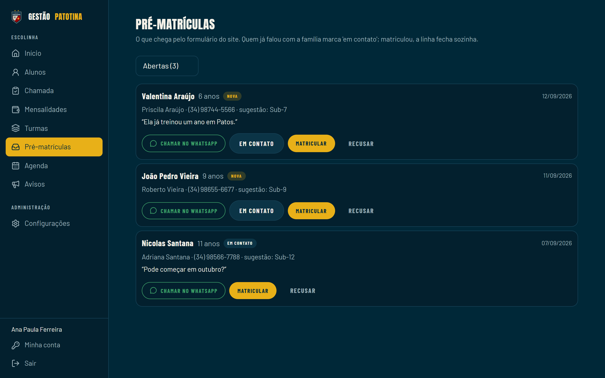
- Filtro por situação: nova, em contato, matriculada, recusada.
- Chamar no WhatsApp abre a conversa com a família e já marca “em contato”.
- Em contato marca manualmente, se você falou por outro caminho.
- Matricular abre a matrícula já preenchida com o que a família escreveu. Ao salvar, a pré-matrícula fecha sozinha.
- Recusar, se não vai dar (sem vaga, idade fora da faixa…). Dá para reabrir depois.
10 Turmas
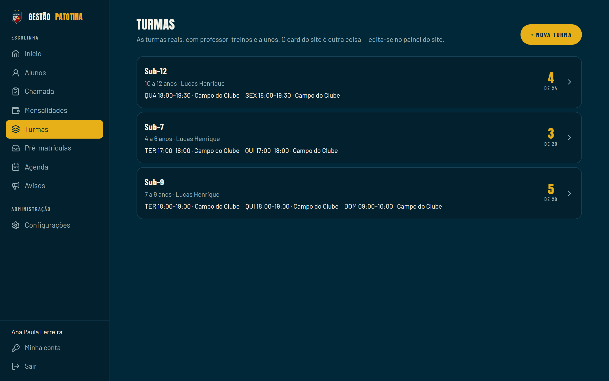
- + Nova turma: nome, professor, treinos (dia, horário, local), faixa etária, vagas e mensalidade sugerida.
- Cada card mostra a faixa etária, o professor, os treinos e quantos alunos estão nela. Toque para editar.
A faixa etária é o que faz a matrícula sugerir a turma pela idade, e os treinos são o que faz a chamada abrir na turma certa e a grade de frequência saber quais dias eram de treino. O card que aparece no site é outra coisa — edita-se no painel do site.
11 Agenda e convocação
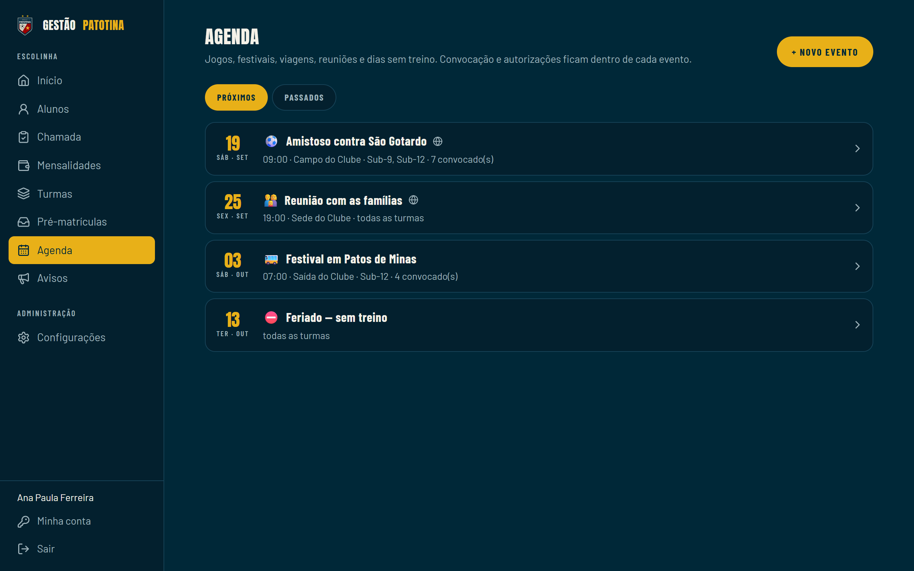
- + Novo evento: jogo, festival, viagem, reunião ou dia sem treino. Com data, hora, local e as turmas envolvidas.
- Toque no evento para abrir a convocação.
- O globo marca o evento com “Mostrar no site”: ele aparece em “Próximos compromissos” em www.patotina.com.br.
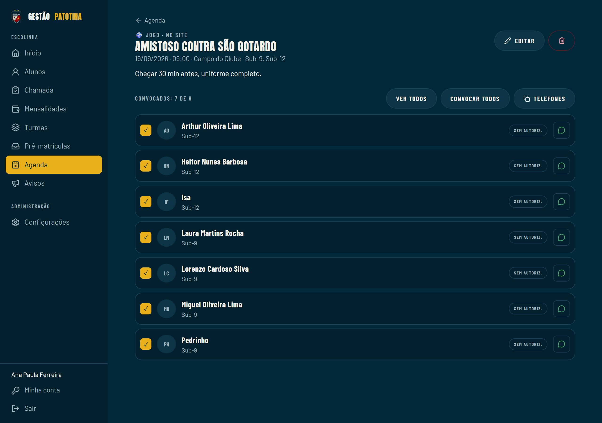
- Editar o evento (a lixeira ao lado apaga — o único lugar do app em que algo se apaga, porque evento não é histórico).
- Ver todos mostra todos os alunos das turmas do evento, para convocar um a um.
- Convocar todos de uma vez.
- Telefones copia a lista para colar numa lista de transmissão do WhatsApp.
- Toque no aluno para convocar ou desconvocar. Em viagem, o ✓ ao lado marca quem já trouxe a autorização assinada.
- O WhatsApp de cada família já com a convocação escrita (dia, hora, local).
12 Avisos para as famílias
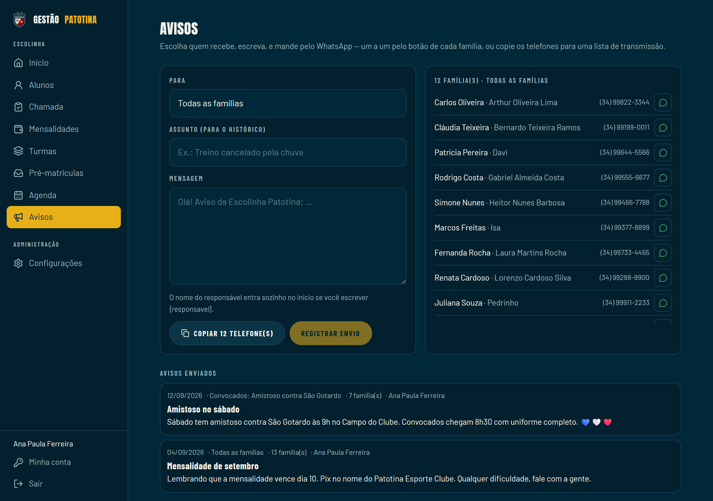
- Escolha o público: todas as famílias, uma turma, quem está com mensalidade atrasada, ou os convocados de um evento.
- O assunto é só para o histórico.
- A mensagem. Escreva
{responsavel}e o nome de cada um entra sozinho. - A lista de quem recebe. Família sem telefone aparece marcada — complete na ficha.
- Mande um a um pelo botão de cada família…
- …ou copie os telefones para uma lista de transmissão.
- Registrar envio guarda o aviso no histórico — e ele aparece na área da família.
13 Área da família
O responsável entra em app.patotina.com.br/familia com o acesso criado na ficha do aluno. Ele vê só os filhos dele.
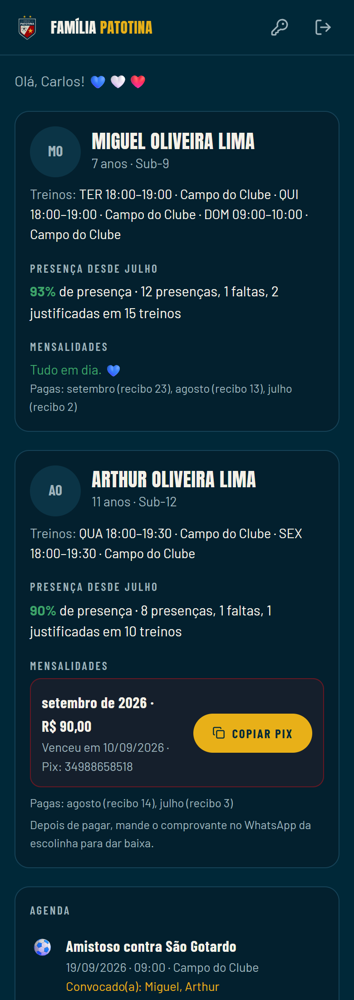
- Cada filho tem o seu bloco, com turma e treinos. Família com dois filhos vê os dois, um embaixo do outro.
- Presença dos últimos três meses.
- Mensalidades em aberto, com vencimento e valor.
- Pix copia-e-cola já com o valor. Depois de pagar, a família manda o comprovante no WhatsApp e você dá baixa.
- Agenda, com “convocado” quando for o caso.
- Os avisos que você registrou.
A família não consegue entrar? Na ficha do aluno, “Link de senha” manda um e-mail para ela criar uma senha nova. Confira também se o acesso não está “desligado”.
14 Configurações
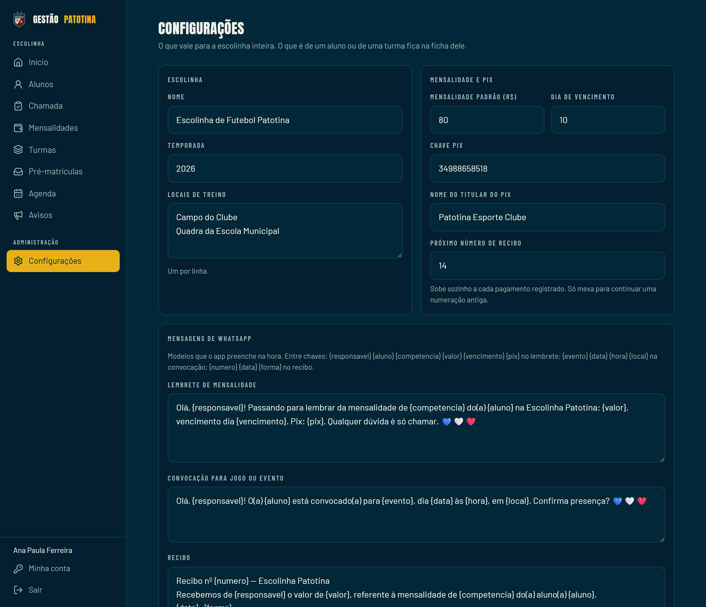
- A mensalidade padrão e…
- …o dia de vencimento que as turmas e as cobranças novas usam.
- A chave Pix e o titular: entram no lembrete e no Pix copia-e-cola da família.
- Os locais de treino, um por linha — viram opções ao cadastrar os treinos de uma turma.
- Os modelos de mensagem do WhatsApp (lembrete de mensalidade, convocação, recibo). Entre chaves —
{responsavel},{aluno},{valor}… — entra o dado certo na hora. - Salvar. Vale para a escolinha inteira.
15 Contas (só o administrador)
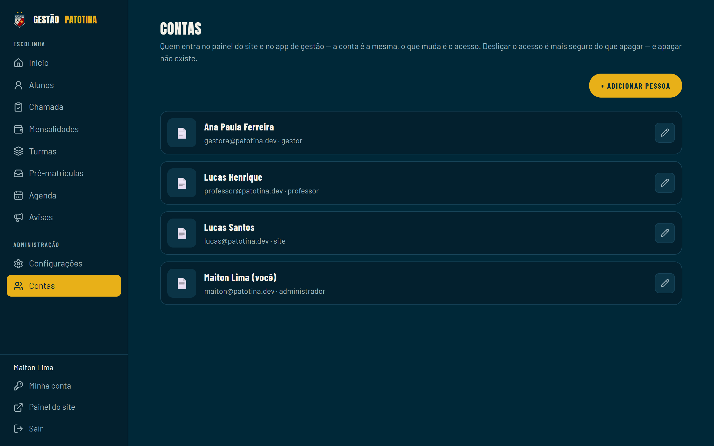
- Nova conta: nome, e-mail, senha inicial e o nível na escolinha — Professor (chamada e alunos das turmas dele), Gestão (tudo) ou Administrador (tudo + Contas). “Edita o site” é um extra, para quem também cuida do painel.
- Cada linha mostra o nível. Toque para mudar o nível, trocar a senha ou desligar o acesso.
? Perguntas que sempre aparecem
- A chamada não salvou.
- Sem sinal, ela fica guardada no celular e sobe quando a internet voltar — não feche o app antes disso.
- Gerei as cobranças e um aluno ficou de fora.
- Ele não estava ativo (pré-matrícula, trancado ou desligado). Reative e clique em “Gerar para N sem cobrança”.
- Errei o pagamento.
- No “…” da cobrança, “Reabrir” desfaz; o recibo antigo fica anotado na observação, para não sumir número.
- A família não consegue entrar.
- Na ficha do aluno, “Link de senha” manda um e-mail para ela criar uma senha nova. Confira se o acesso não está “desligado”.
- Quero mudar o texto do lembrete / a chave Pix / o dia de vencimento.
- Tudo em Configurações.
- Preciso apagar um aluno que foi cadastrado errado.
- Não se apaga: desligue-o (Histórico → Desligar). Ele some das listas do dia a dia e o registro fica.